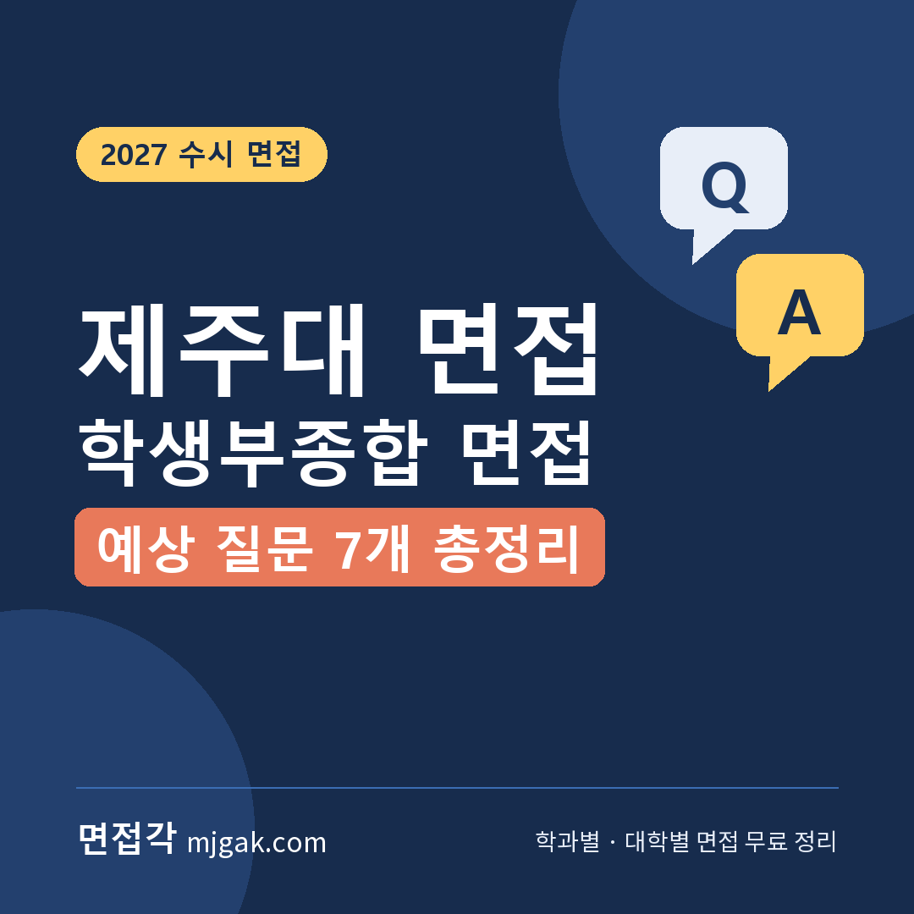
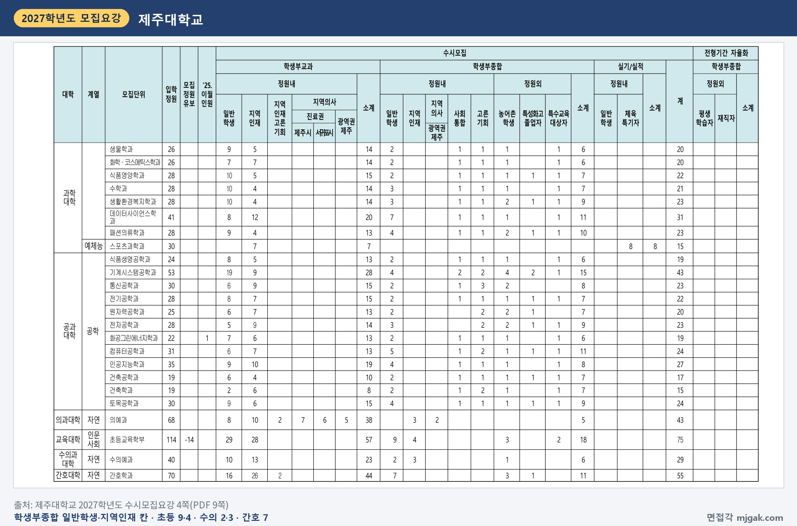
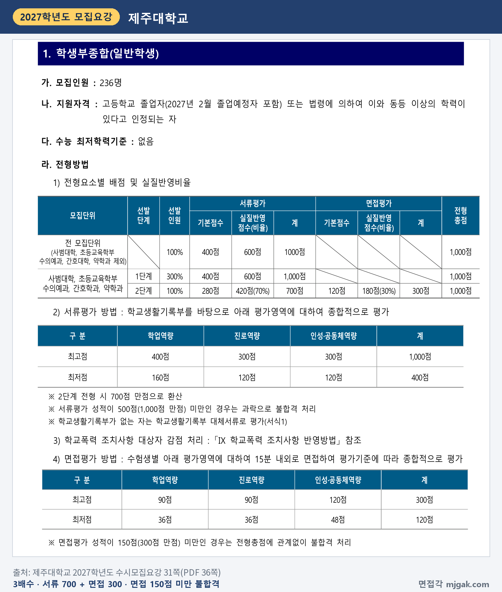
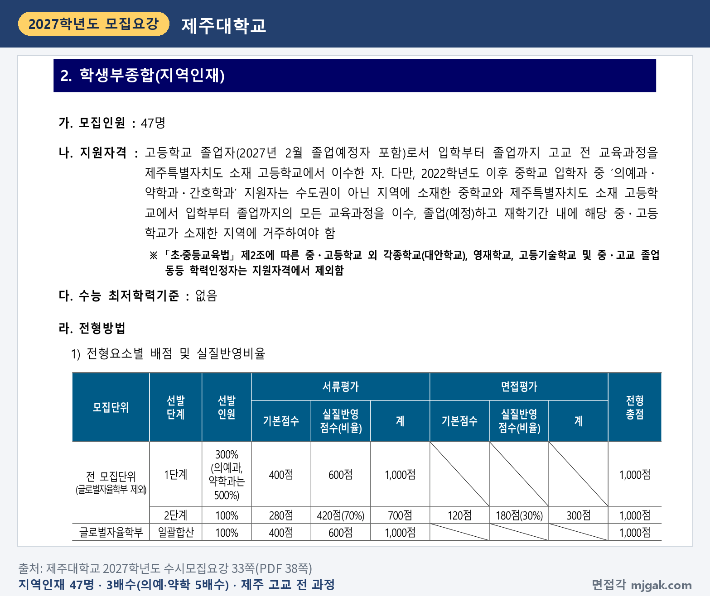
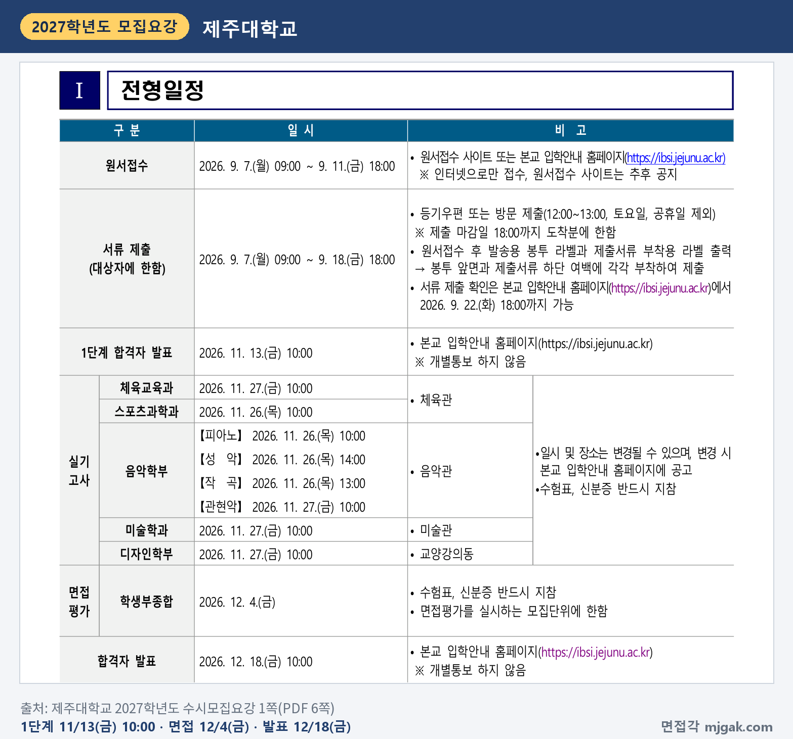
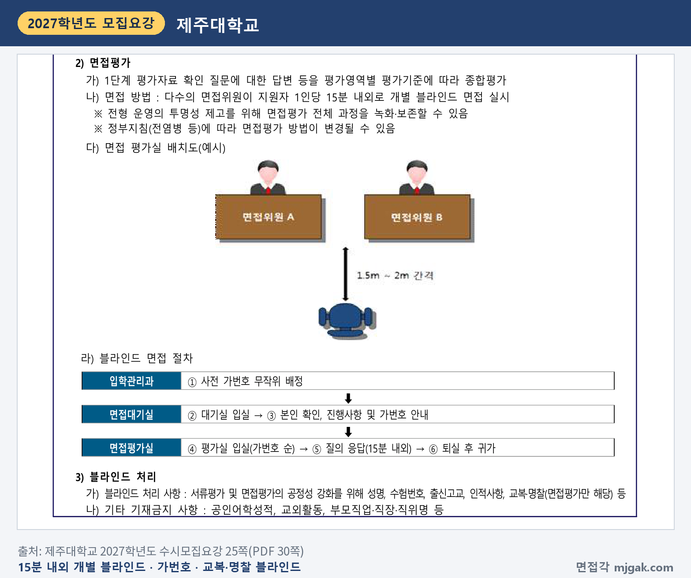
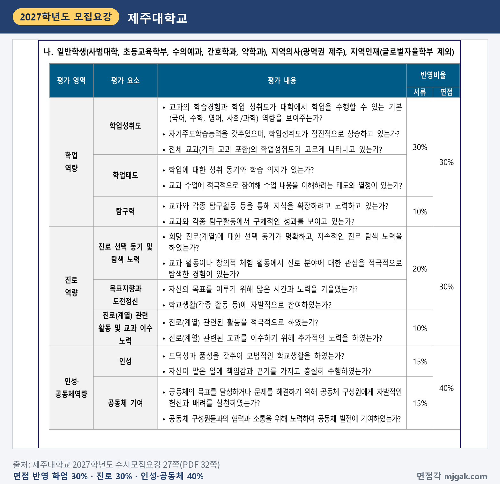
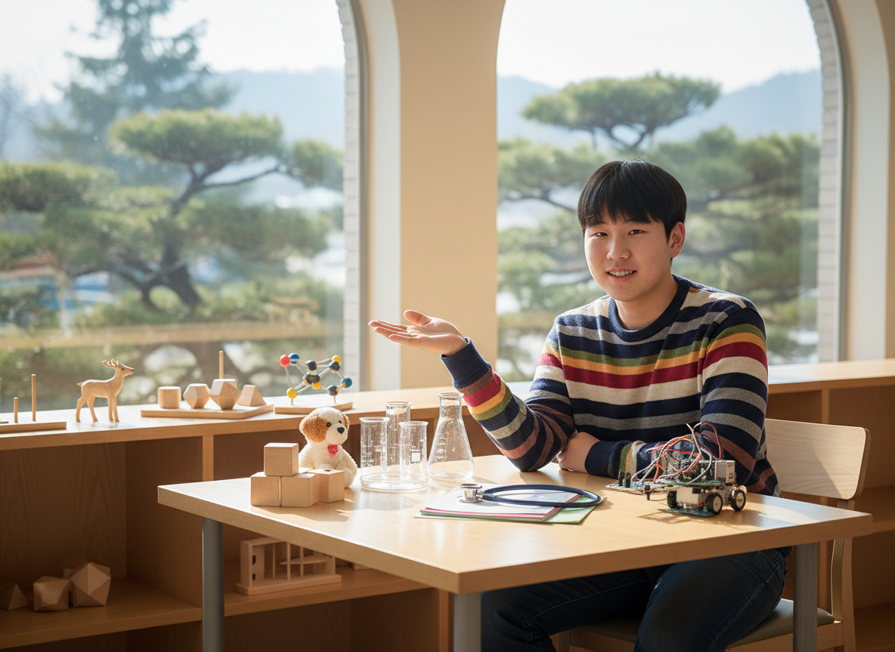
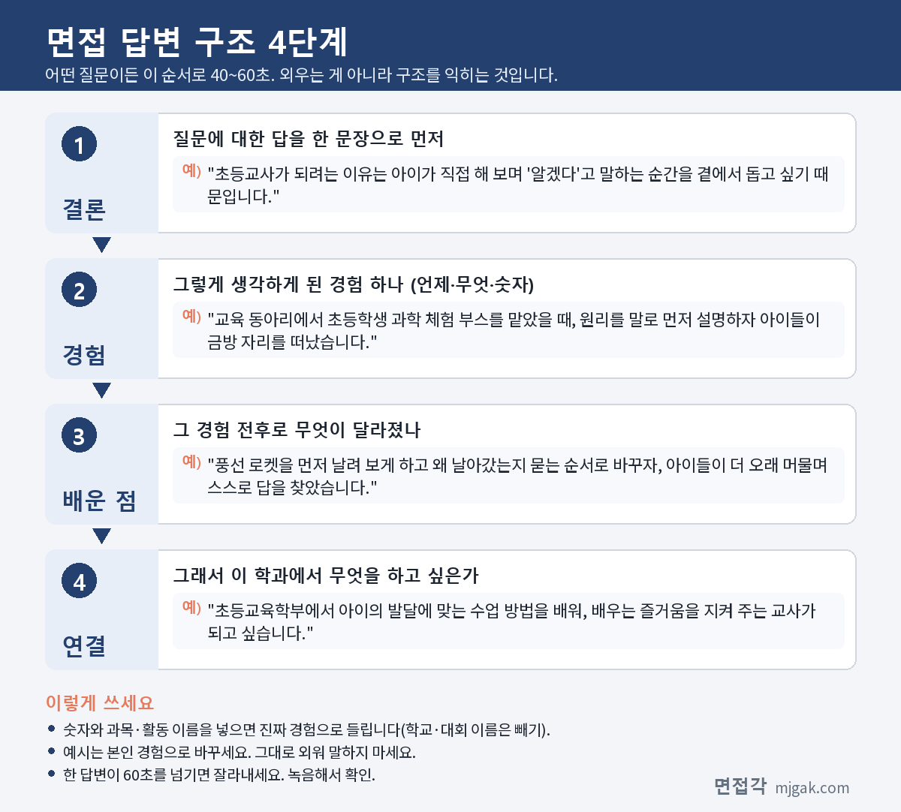

Ctrl+V (서식 유지됨)제목
본문 (이 영역 전체가 복사됩니다)
📷 여기에 이미지 넣기 — 썸네일 — thumb-jejunu.png (대표 이미지로 지정)
제주대 학생부종합에서 먼저 확인할 것은 내 모집단위에 면접이 있느냐입니다. 일반학생 전형은 사범대학, 초등교육학부, 수의예과, 간호학과, 약학과만 면접을 보고, 지역인재 전형은 글로벌자율학부를 뺀 모집단위가, 지역의사(광역권 제주) 전형은 의예과가 면접을 봅니다. 1단계 합격자 발표는 수능 전인 11월 13일(금) 10:00, 면접은 수능 15일 뒤인 12월 4일(금)입니다(이 글에서 계산한 값). 2단계는 서류 70%와 면접 30%를 합산하는데, 면접 300점 만점에 150점 미만이면 전형총점과 관계없이 불합격입니다. 면접은 지원자 1인당 15분 내외의 개별 블라인드 면접이고, 수능최저학력기준은 없습니다. 이 글은 제주대학교 2027학년도 수시모집요강으로 인원, 전형 방법, 일정, 면접 방식, 예상 질문 7개, 수능 뒤 14일 준비 순서를 정리했습니다. 위 모집단위에 지원한 고3과 재수생이 읽으시면 됩니다.
1. 면접 있는 학생부종합, 2027학년도에는 어떻게 보나
2027학년도에는 2026학년도의 일반학생1(서류형)과 일반학생2(면접형)가 학생부종합(일반학생) 하나로 합쳐졌습니다(모집요강 앞쪽 주요 변경내용). 그래서 같은 일반학생 전형 안에서도 모집단위에 따라 면접이 있거나 없습니다.
일반학생 전형은 236명이고, 면접을 보는 모집단위 인원을 이 글에서 더하면 54명입니다. 초등교육학부 9명, 간호학과 7명, 약학과 3명, 수의예과 2명, 사범대학 9개 학과 33명(윤리교육과 5명, 국어교육과·영어교육과·수학교육과·물리교육전공·컴퓨터교육과 각 4명, 사회교육과·생물교육전공 각 3명, 지리교육과 2명)입니다(2~5쪽).
지역인재 전형은 47명 중 글로벌자율학부 14명을 뺀 33명이 면접을 봅니다(이 글에서 계산). 사범대학 19명, 초등교육학부·약학과 각 4명, 의예과·수의예과 각 3명이고, 간호학과는 이 전형 인원이 없습니다. 지역의사(광역권 제주)는 의예과 2명입니다(2~5쪽).
📷 여기에 이미지 넣기 — 캡처 1 — 제주대학교 2027학년도 수시모집요강 4쪽(PDF 9쪽): jejunu-2027-units.png
전형 방법은 1단계에서 서류평가 100%로 3배수를 뽑고, 2단계에서 서류 700점(70%)과 면접 300점(30%)을 합산합니다. 서류평가가 500점(1,000점 만점) 미만이면 과락, 면접평가가 150점(300점 만점) 미만이면 전형총점과 관계없이 불합격입니다(31쪽). 1단계 합격선의 동점자는 모두 1단계 합격자로 뽑습니다(32쪽).
📷 여기에 이미지 넣기 — 캡처 2 — 제주대학교 2027학년도 수시모집요강 31쪽(PDF 36쪽): jejunu-2027-method.png
지역인재 전형은 입학부터 졸업까지 고교 전 교육과정을 제주특별자치도 소재 고교에서 이수해야 합니다. 2022학년도 이후 중학교 입학자 중 의예과·약학과·간호학과 지원자는 비수도권 중학교와 제주 소재 고교의 전 과정을 이수하고 재학 기간에 그 지역에 거주해야 합니다. 1단계는 3배수이고 의예과·약학과만 5배수입니다(33쪽). 지역의사(광역권 제주)는 1단계 5배수이고, 의사면허를 취득한 뒤 제주에서 10년간 의무복무할 사람이 지원합니다(35쪽).
📷 여기에 이미지 넣기 — 캡처 3 — 제주대학교 2027학년도 수시모집요강 33쪽(PDF 38쪽): jejunu-2027-local.png
동점자는 면접평가 성적, 면접 인성·공동체역량, 서류 인성·공동체역량, 서류 학업역량 순으로 가립니다(32·34·36쪽). 학교폭력 조치사항은 학생부종합전형의 서류평가 점수에서 1~3호 20점, 4·5호 50점, 6·7호 100점을 깎고, 8·9호는 부적격입니다(74쪽). 전형료는 52,000원이고, 1단계에서 불합격하면 면접평가료 16,000원을 돌려주지만 면접 결시자는 돌려받지 못합니다(8쪽).
2. 언제 보나: 수능 전 1단계 발표, 수능 15일 뒤 면접
- 11월 13일(금) 10:00: 1단계 합격자 발표, 입학안내 홈페이지, 개별통보 없음(1쪽)
- 11월 19일(목): 수능
- 12월 4일(금): 면접, 수험표·신분증 반드시 지참(1쪽)
- 12월 18일(금) 10:00: 합격자 발표, 개별통보 없음(1쪽)
1단계 발표에서 면접까지 21일, 수능에서 면접까지 15일입니다(이 글에서 계산한 값). 면접 시간과 장소는 모집요강에 적혀 있지 않으니 입학안내 홈페이지 공지를 확인하세요. 면접평가에 결시하거나 중도에 포기하면 불합격입니다(75쪽).
📷 여기에 이미지 넣기 — 캡처 4 — 제주대학교 2027학년도 수시모집요강 1쪽(PDF 6쪽): jejunu-2027-schedule.png
3. 면접은 어떻게 보나
면접은 1단계 평가자료 확인 질문에 대한 답변 등을 평가영역별 기준에 따라 종합평가합니다. 다수의 면접위원이 지원자 1인당 15분 내외로 개별 블라인드 면접을 하고, 전체 과정을 녹화·보존할 수 있습니다(25쪽).
절차는 사전 가번호 무작위 배정 → 대기실 입실 → 본인 확인과 가번호 안내 → 가번호 순으로 평가실 입실 → 질의응답(15분 내외) → 퇴실 후 귀가입니다. 블라인드 처리 사항은 성명, 수험번호, 출신고교, 인적사항, 교복·명찰(면접평가만 해당) 등이고, 공인어학성적, 교외활동, 부모직업·직장·직위명 등은 기재금지 사항입니다(25쪽).
📷 여기에 이미지 넣기 — 캡처 5 — 제주대학교 2027학년도 수시모집요강 25쪽(PDF 30쪽): jejunu-2027-interview.png
면접 배점은 학업역량 90점, 진로역량 90점, 인성·공동체역량 120점입니다(31쪽). 평가 내용은 다음과 같습니다(27쪽).
- 학업역량(면접 30%): 학업성취도, 학업태도, 탐구력
- 진로역량(면접 30%): 진로 선택 동기 및 탐색 노력, 목표지향과 도전정신, 진로(계열) 관련 활동 및 교과 이수 노력
- 인성·공동체역량(면접 40%): 인성(도덕성과 품성, 맡은 일의 책임감과 끈기), 공동체 기여(자발적인 헌신과 배려, 협력과 소통)
📷 여기에 이미지 넣기 — 캡처 6 — 제주대학교 2027학년도 수시모집요강 27쪽(PDF 32쪽): jejunu-2027-criteria.png
모집요강에는 입학안내 홈페이지에서 "최근 제주대학교 학생부종합전형 면접평가 질문예시"를 안내한다고 적혀 있습니다(28쪽). 면접 전 홈페이지에서 함께 보세요.
4. 평가 기준에서 나올 예상 질문 7개와 답변법
모집요강에는 면접 질문이 실려 있지 않습니다. 아래 7개는 위 평가 내용과 '1단계 평가자료 확인 질문'이라는 방식으로 정리한 예상 질문입니다. 배점이 가장 큰 인성·공동체역량은 두 개를 넣었습니다. 예시 답변은 모집단위를 바꿔 쓴 가상의 예시이니 본인 경험으로 바꾸세요.
▶ 질문 1. 초등교사가 되려는 이유를 학생부 활동과 연결해 말해 보세요. (진로역량: 진로 선택 동기 및 탐색 노력)
왜 묻나: "희망 진로(계열)에 대한 선택 동기가 명확"한지와 학교생활에서 진로를 탐색한 경험을 봅니다.
답변 구조: 지원 이유 한 문장 → 확인한 학생부 장면 → 그 장면에서 알게 된 것 → 학과 연결.
답변 예시 (초등교육학부):
"초등교사가 되려는 이유는 아이가 직접 해 보며 '알겠다'고 말하는 순간을 곁에서 돕고 싶기 때문입니다. 교육 동아리에서 초등학생 과학 체험 부스를 맡았을 때, 원리를 말로 먼저 설명하자 아이들이 금방 자리를 떠났습니다. 풍선 로켓을 먼저 날려 보게 하고 왜 날아갔는지 묻는 순서로 바꾸자, 아이들이 더 오래 머물며 스스로 답을 찾았습니다. 초등교육학부에서 아이의 발달에 맞는 수업 방법을 배워, 배우는 즐거움을 지켜 주는 교사가 되고 싶습니다."
주의: "아이들을 좋아해서"로 끝내지 말고, 학생부에 적힌 장면 하나를 붙이세요.
▶ 질문 2. 성적이 오르거나 내린 과목이 있다면 그 이유와 공부 방법을 말해 보세요. (학업역량: 학업성취도, 학업태도)
왜 묻나: 평가 내용에 "학업성취도가 점진적으로 상승하고 있는가"와 "학습 의지"가 있습니다. 면접에서는 이 평가 내용과 이어지는 질문으로 볼 수 있습니다.
답변 구조: 과목과 변화 → 원인 → 바꾼 공부 방법 → 결과와 학과 연결.
답변 예시 (수학교육과):
"수학Ⅱ는 1학기에 성적이 내려갔습니다. 미분 문제를 풀이 순서만 외워서 풀다 보니 처음 보는 문제에서 막혔습니다. 2학기에는 단원마다 개념의 정의를 제 말로 한 줄씩 쓰고, 친구에게 설명해 보는 시간을 일주일에 한 번 만들었습니다. 설명하다 막히는 곳이 제가 모르는 곳이라는 것을 알았고, 성적도 다시 올랐습니다. 수학교육과에서 학생이 막히는 지점을 찾는 수업을 배우고 싶습니다."
주의: 성적이 떨어진 이야기를 피하지 마세요. 원인과 바꾼 방법이 있으면 됩니다.
▶ 질문 3. 학생부에 적힌 탐구 활동 하나를 골라 과정과 결과를 설명해 보세요. (학업역량: 탐구력)
왜 묻나: "교과와 각종 탐구활동에서 구체적인 성과"를 봅니다. 1단계 평가자료를 확인하는 질문이라, 내가 직접 한 과정을 설명할 수 있어야 합니다.
답변 구조: 탐구 질문 한 문장 → 방법 → 막힌 점과 고친 점 → 결과 → 학과 연결.
답변 예시 (수의예과):
"생명과학 수업에서 수온이 물벼룩의 심장 박동에 주는 영향을 알아봤습니다. 선생님 지도 아래 물벼룩을 15도, 20도, 25도 물에 차례로 옮겨 현미경으로 1분 동안 박동 수를 셌습니다. 처음에는 한 마리만 세서 값이 들쭉날쭉해, 다섯 마리씩 세어 평균을 냈고 관찰이 끝난 물벼룩은 원래 수조로 돌려보냈습니다. 수온이 높을수록 박동이 빨라지는 것을 보고 변온동물은 주변 온도가 몸의 기능에 바로 영향을 준다는 것을 알았고, 수의예과에서 동물마다 다른 생리를 배우고 싶습니다."
주의: 결론만 말하지 말고 방법에서 고친 점을 넣으세요. 고친 점이 있어야 과정을 설명할 수 있습니다.
📷 여기에 이미지 넣기 — 이미지 1 — 제미나이 생성: 창밖으로 상록 비자나무가 보이는 초겨울 캠퍼스 라운지에서 그림책·청진기·강아지 모형·비커·기하 모형 옆에서 답하는 남학생(실사) / "제미나이 프롬프트 1" · gem-jejunu-1.png
(AI로 만든 이미지로, 실제 캠퍼스와 다를 수 있습니다)
▶ 질문 4. 약학과 진학을 위해 어떤 과목을 골라 들었고, 그 과목에서 무엇을 배웠나요? (진로역량: 진로(계열) 관련 활동 및 교과 이수 노력)
왜 묻나: 평가 내용에 "진로(계열) 관련된 교과를 이수하기 위해 추가적인 노력을 하였는가"가 있습니다. 면접에서는 이 평가 내용과 이어지는 질문으로 볼 수 있습니다.
답변 구조: 고른 과목과 이유 → 배운 내용 하나 → 그 내용을 진로와 이은 생각 → 학과 연결.
답변 예시 (약학과):
"약학과에 필요하다고 생각해 3학년에 화학Ⅱ와 생명과학Ⅱ를 골랐습니다. 화학Ⅱ의 반응 속도 단원에서 온도가 높을수록 반응이 빨라진다는 것을 배웠을 때, 약 상자의 '서늘한 곳에 보관'이라는 문구가 떠올랐습니다. 그래서 온도에 따라 성분이 변하는 약이 있는지 찾아 발표했고, 약은 만드는 것만큼 보관이 중요하다는 것을 알았습니다. 약학과에서 약의 성분과 안정성을 깊이 배우고 싶습니다."
주의: 과목 이름만 나열하지 말고, 고른 이유와 배운 내용 하나를 함께 말하세요.
▶ 질문 5. 목표를 세우고 오래 노력해 이룬 경험이 있나요? (진로역량: 목표지향과 도전정신)
왜 묻나: "자신의 목표를 이루기 위해 많은 시간과 노력을 기울였는가"를 봅니다. 기간과 과정이 드러나야 합니다.
답변 구조: 목표 한 문장 → 걸린 기간과 방법 → 막힌 점과 해결 → 결과 → 학과 연결.
답변 예시 (컴퓨터교육과):
"정보 시간에 배운 파이썬으로 반 청소 당번표를 자동으로 짜는 프로그램을 만들겠다고 목표를 세웠습니다. 두 달 동안 점심시간마다 조금씩 만들었는데, 처음에는 같은 친구가 연달아 뽑히는 오류가 있었습니다. 지난주 당번을 기록해 두고 다음 주에는 빼는 방식으로 고쳤고, 한 학기 동안 우리 반이 실제로 썼습니다. 친구들에게 사용법을 설명하며 가르치는 일에 관심이 생겼고, 컴퓨터교육과에서 코딩을 쉽게 가르치는 방법을 배우고 싶습니다."
주의: "열심히 했습니다" 대신 기간, 막힌 점, 고친 방법을 말하세요.
▶ 질문 6. 맡은 일을 책임지고 끝까지 해낸 경험을 말해 보세요. (인성·공동체역량: 인성)
왜 묻나: 인성의 평가 내용에 "자신이 맡은 일에 책임감과 끈기를 가지고 충실히 수행하였는가"가 있습니다.
답변 구조: 맡은 일 → 꾸준히 한 방법 → 빠뜨렸던 순간과 대처 → 배운 점과 학과 연결.
답변 예시 (간호학과):
"2학년 때 학급 보건부장을 맡아 매일 아침 창문을 열어 환기하고 손 소독제를 채웠습니다. 시험 기간에 한 번 확인을 빠뜨려 소독제가 빈 채로 하루가 지나간 적이 있었습니다. 그 뒤로 교실 뒤에 날짜별 확인표를 붙이고, 제가 없는 날은 짝에게 부탁해 1년 동안 거르지 않았습니다. 작은 일을 매일 확인하는 것이 모두의 건강과 이어진다는 것을 배웠고, 간호학과에서도 이 습관을 이어 가겠습니다."
주의: "책임감이 강합니다"라고 말하기보다 기간과 한 일을 보여 주세요.
▶ 질문 7. 학급이나 동아리에서 공동체의 문제를 해결하려고 나서 본 경험이 있나요? (인성·공동체역량: 공동체 기여)
왜 묻나: 공동체 기여의 평가 내용은 "자발적인 헌신과 배려"와 "협력과 소통"입니다. 누가 시키지 않았는데 무엇을 했는지가 중심입니다.
답변 구조: 문제 상황 → 내가 나선 이유 → 한 일 → 친구들의 반응과 결과 → 배운 점.
답변 예시 (국어교육과):
"학급 회의에서 발표가 늘 몇 명에게만 몰리고, 다른 친구들은 의견이 있어도 말하지 않는 일이 반복됐습니다. 저는 회의 전에 쪽지로 의견을 받고, 회의 때 그 내용을 이름 없이 읽어 주자고 제안했습니다. 처음 받은 쪽지에서 체육대회 연습 시간을 바꾸자는 의견이 나와 실제로 반영됐고, 그 뒤로 직접 손을 드는 친구도 늘었습니다. 말할 기회를 만드는 것도 소통이라는 것을 배웠고, 국어교육과에서 말하기 수업을 설계하는 방법을 배우고 싶습니다."
주의: 내가 이끈 이야기만 하지 말고, 친구들의 의견이 어떻게 반영됐는지 넣으세요.
5. 답변은 이 4단계로 만드세요
어떤 질문이든 결론 → 경험 → 배운 점 → 연결 순서로 40~60초 안에 말하세요. 면접은 1인당 15분 내외이니(25쪽), 한 답을 짧게 끊는 연습을 권합니다. 아래 도식은 질문 1을 4단계로 쪼갠 것입니다.
📷 여기에 이미지 넣기 — 도식 — structure-jejunu.png
6. 수능 뒤 남은 14일을 기준으로 짠 준비 순서
11월 3일(화) ~ 12일(목): 수능 공부가 먼저이니 주말에 조금씩 합니다. 학생부를 읽고 수업 장면 두 개, 활동 세 개를 골라 "왜 시작했나, 내가 한 일, 막힌 점, 다음에 한 일"을 한 줄씩 적습니다.
11월 13일(금) 10:00, 1단계 발표: 입학안내 홈페이지에서 직접 확인합니다. 개별통보는 없습니다(1쪽).
11월 14일(토) ~ 18일(수): 수능에 집중합니다. 답변은 적어 둔 메모만 고칩니다.
11월 19일(목): 수능.
11월 20일(금) ~ 22일(일): 수능 뒤 남은 14일(11월 20일~12월 3일, 이 글에서 계산)이 시작됩니다. 학생부를 처음부터 다시 읽고 질문 7개의 초안을 끝냅니다. 이름, 학교 이름, 부모 직업, 공인어학성적, 교외활동이 나오는 문장은 지웁니다(25쪽).
11월 23일(월) ~ 29일(일): 15분을 재며 모의 면접을 두 번 녹음합니다. 배점이 가장 큰 인성·공동체역량 질문 6·7은 다른 활동으로도 답해 봅니다.
11월 30일(월) ~ 12월 2일(수): 가족에게 답 뒤에 "왜요?"를 두 번 물어 달라고 부탁해 꼬리 질문을 연습합니다. 60초를 넘는 답은 줄입니다.
12월 3일(목): 입학안내 홈페이지에서 면접 시간과 장소 공지를 확인하고, 수험표를 출력합니다. 새 답변은 만들지 않습니다.
12월 4일(금), 면접: 수험표와 신분증을 챙기고(1쪽), 교복·명찰은 블라인드 처리 사항이라 착용하지 않습니다(25쪽).
12월 18일(금) 10:00: 합격자 발표. 합격했다면 12월 21일(월) 10:00 ~ 23일(수) 18:00 온라인 문서등록을 놓치지 마세요(1쪽).
7. 제주대 학생부종합 면접 자주 묻는 것들
Q. 일반학생 전형과 지역인재 전형에 같이 지원할 수 있나요?
A. 아닙니다. 제주대는 최대 5회 지원할 수 있지만 학생부종합(일반학생, 지역인재, 지역의사(광역권 제주)) 중에서는 1회만 지원할 수 있습니다(7·79쪽).
Q. 서류 점수가 높으면 면접 점수가 낮아도 되나요?
A. 아닙니다. 면접평가가 150점(300점 만점) 미만이면 전형총점과 관계없이 불합격입니다(31·33·35쪽).
Q. 제시문을 읽고 푸는 문제가 나오나요?
A. 모집요강에 제시문 안내는 없습니다. 면접은 1단계 평가자료 확인 질문에 대한 답변 등을 평가합니다(25쪽).
Q. 면접 복장은 어떻게 하나요?
A. 블라인드 처리 사항에 교복·명찰이 들어 있습니다(25쪽). 그 밖의 복장 규정은 모집요강에 없습니다. 수험표와 신분증은 반드시 가져가야 합니다(1쪽).
Q. 수능 최저가 있나요?
A. 학생부종합전형은 없습니다(25쪽).
8. 면접 전날 체크리스트
□ 지원 동기를 학생부 장면 하나와 함께 60초 안에 말할 수 있다
□ 성적이 오르내린 과목의 이유와 바꾼 공부 방법을 말할 수 있다
□ 학생부의 탐구 하나를 방법과 고친 점까지 설명할 수 있다
□ 맡은 일을 끝까지 한 경험과 공동체를 위해 나선 경험을 하나씩 말할 수 있다
□ 녹음으로 이름·학교 이름·부모 직업·교외활동이 나오지 않는지 확인했다
□ 입학안내 홈페이지에서 면접 시간과 장소를 확인했다
□ 수험표와 신분증을 챙겼고, 블라인드 처리 사항인 교복·명찰은 착용하지 않는다
9. 같은 시기에 면접 보는 대학
제주대와 같은 주에 면접을 보는 국립대입니다.
▷ 충남대 학생부종합Ⅰ(면접전형) 면접 총정리 (12월 1일~4일)
▷ 전남대 고교생활우수자Ⅰ 면접 총정리 (12월 2일)
▷ 부산대 학생부종합전형·지역인재전형 면접 총정리 (12월 5일)
10. 함께 보면 좋은 글
제주대 학생부종합 면접은 15분 동안 학생부에 적힌 공부와 활동을 내 말로 설명하고, 그 경험이 지원한 학과로 어떻게 이어지는지 보여 주는 자리입니다.
※ 이 글의 내용은 제주대학교 2027학년도 수시모집요강에서 인용했습니다. 괄호 안 쪽수는 모집요강에 인쇄된 쪽수입니다. 예상 질문은 모집요강의 평가 내용을 바탕으로 정리한 것이며 대학이 공개한 질문이 아닙니다. 면접 시간과 장소, 질문예시는 제주대 입학안내 홈페이지를 꼭 확인하세요.
제주대를 포함한 111개 대학의 2027학년도 면접 정보와 77개 학과별 면접 질문·답변 예시, 대학이 공개한 실제 면접 기출을 무료로 정리한 사이트입니다. 회원가입 없이 바로 볼 수 있고, 질문을 무작위로 뽑아 60초 타이머로 연습하는 모의 면접도 있습니다.
태그 (#은 에디터가 자동으로 붙이므로 그대로 붙여 넣어도 됩니다)
넣을 이미지 목록 (docs/promo/img 폴더)









제미나이 프롬프트 1 — 창밖으로 상록 비자나무가 보이는 초겨울 캠퍼스 라운지에서 그림책·청진기·강아지 모형·비커·기하 모형 옆에서 답하는 남학생(실사) (4:3) — 제미나이에 그대로 붙여 넣어 이미지를 만드세요